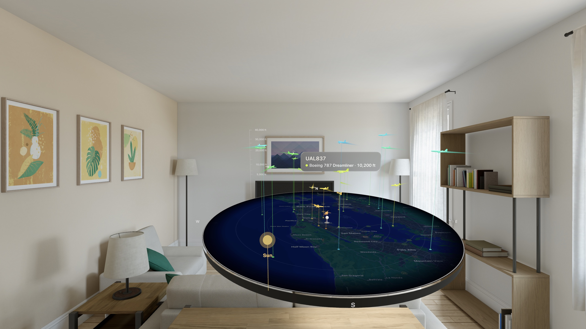
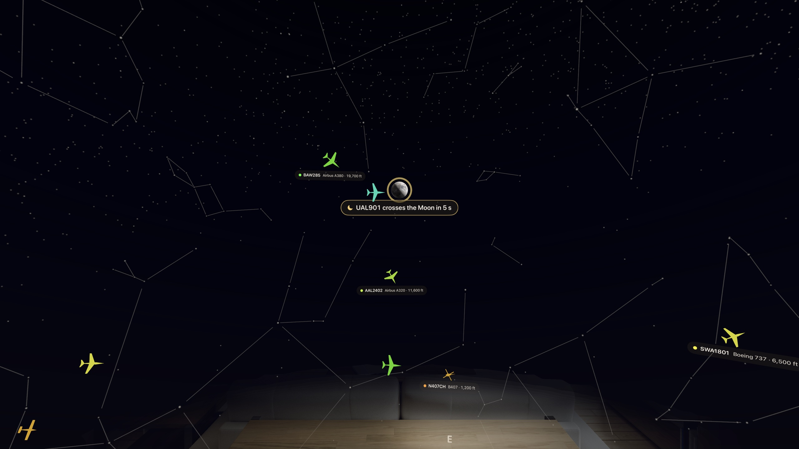
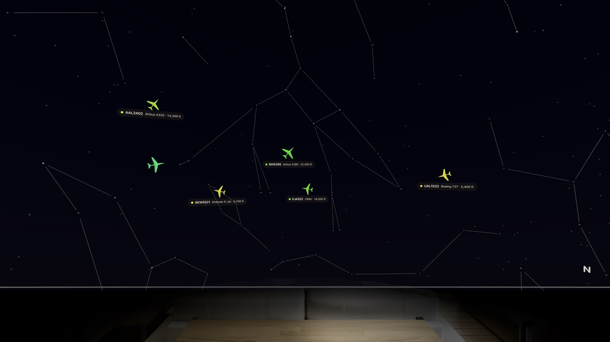
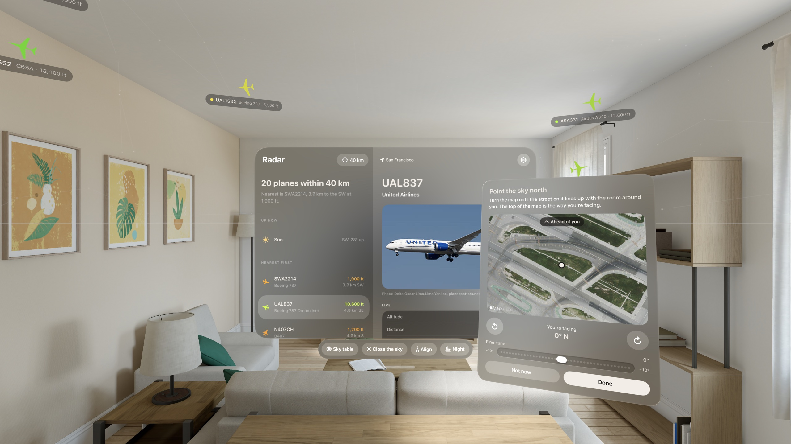
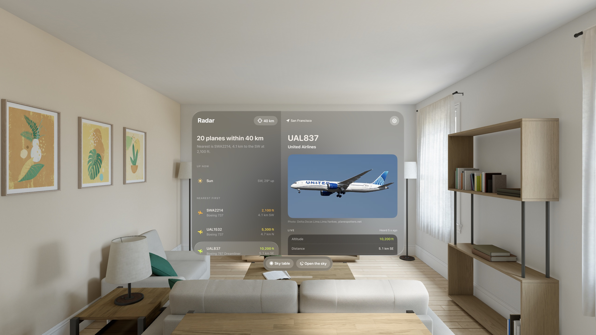
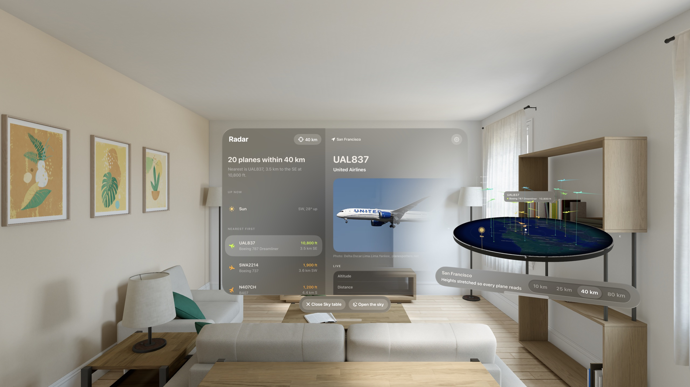
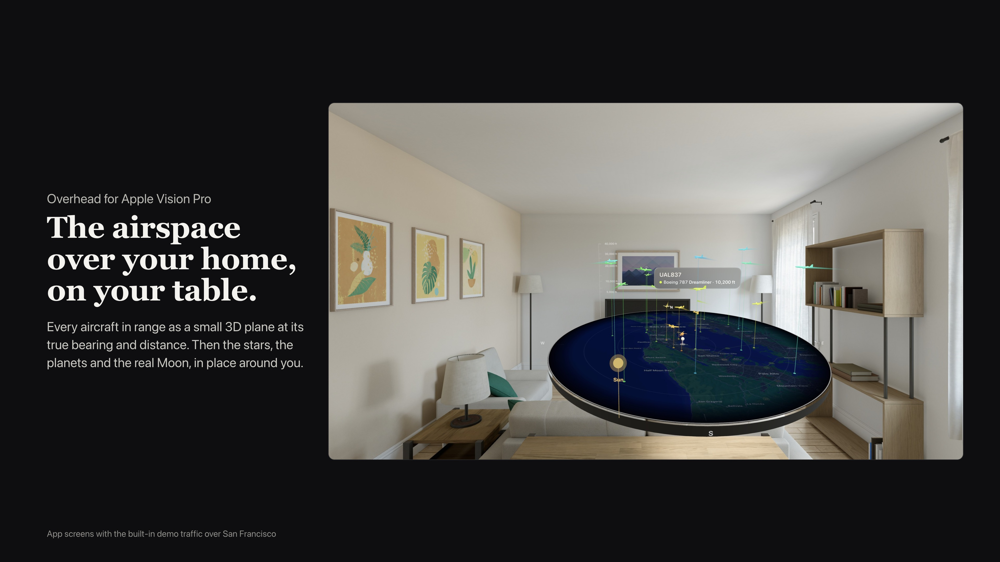
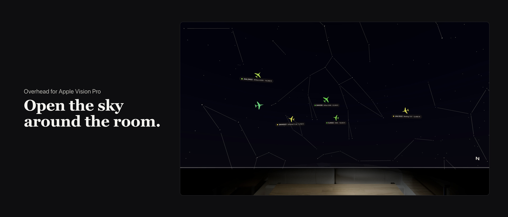
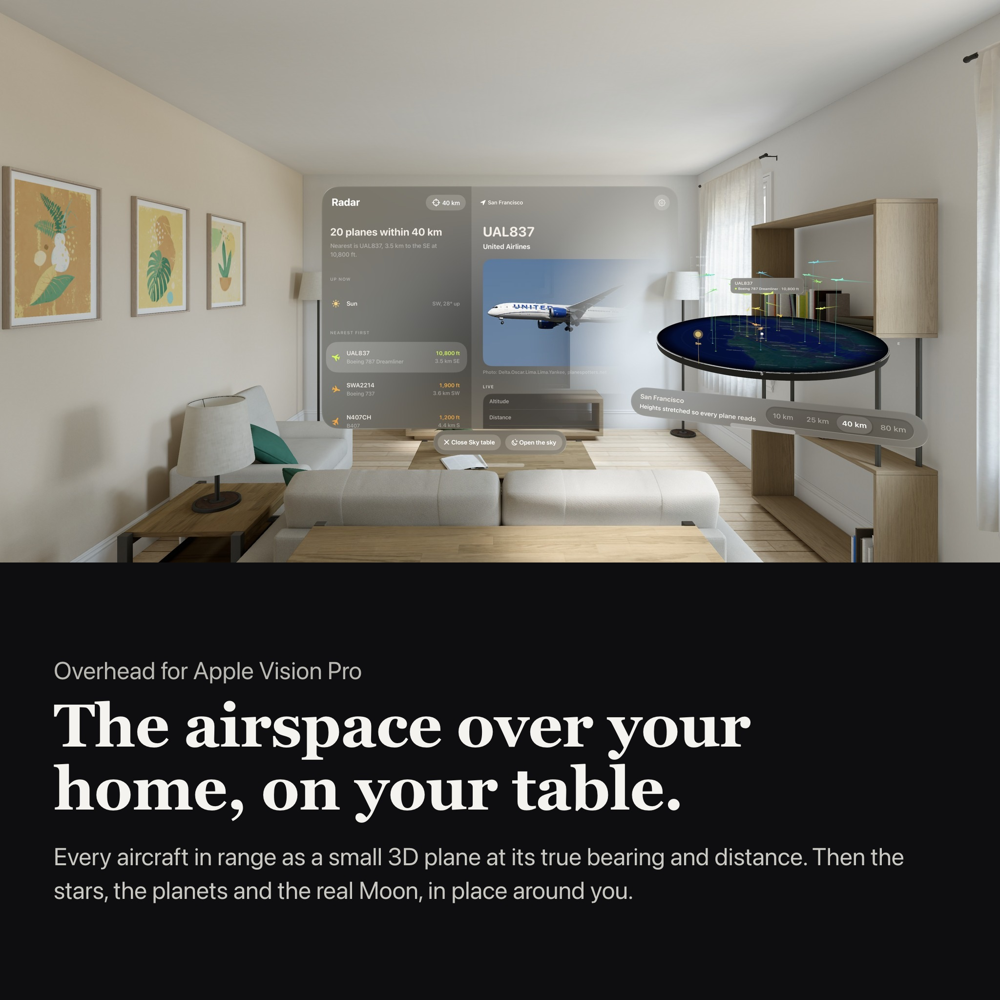

Overhead: Plane Tracker & ISS for Apple Vision Pro
Press kit · App Store · updated 20 Nov 2026

What is new
Overhead 2.5.2 adds a native Apple Vision Pro app. The Radar window lists the aircraft in range, nearest first. The Sky table puts a live model of the airspace on the table in front of you, with every plane at its true bearing and distance. Open the sky puts stars, planets, the Sun, the real Moon, the International Space Station and live planes around you at their true positions, and warns you when a plane is about to cross the Moon or the Sun.
Facts
- Version
- 2.5.2 (build 201), submitted to App Review 20 Nov 2026
- Platform
- Apple Vision Pro (visionOS), universal purchase with iPhone, iPad, Mac and Apple TV
- Languages
- App text in English (US, UK, Australia, Canada) and Spanish (Mexico, Spain); store page in 50 languages
- Price
- Free to download. The radar and the sky are free. Aircraft details are free for a few planes, then need one optional Overhead Pro purchase, the same on every device, with Family Sharing
- Privacy
- No account and no login. Location centres the radar and can be replaced by a typed place
- Accessibility
- Every row and every 3D plane has a VoiceOver label, window text uses system text styles that follow Dynamic Type, and Reduce Motion stops trail animation and the immersive fade.
- Window
- 11 Dec 2026 to 1 Jan 2027
- Developer
- Hemal Modi, one developer, Dubai
Screens
Captures from the visionOS Simulator at 3840 by 2160 with the app's built-in demo traffic over San Francisco, so the planes shown are staged. Positions in the shipped app come from live ADS-B feeds. No marketing frames. Click a screen for the 2560 px version.











Why now
- The window sits on the closest full Moon of 2026: 24 Dec, 01:28 UT, at 356,740 km. Full Moon at perigee, 2001 to 2100 Fred Espenak, AstroPixels
Key art
Built only from the Apple Vision Pro app's own screens, with one serif headline. The text-free files are for editors who set their own type. No device frames.






- Text-free: vp-01-table, 3840 by 2160
- Text-free: vp-02-table-radar, 3840 by 2160
- Text-free: vp-03-night, 3840 by 2160
- All key art, JPEG, zip